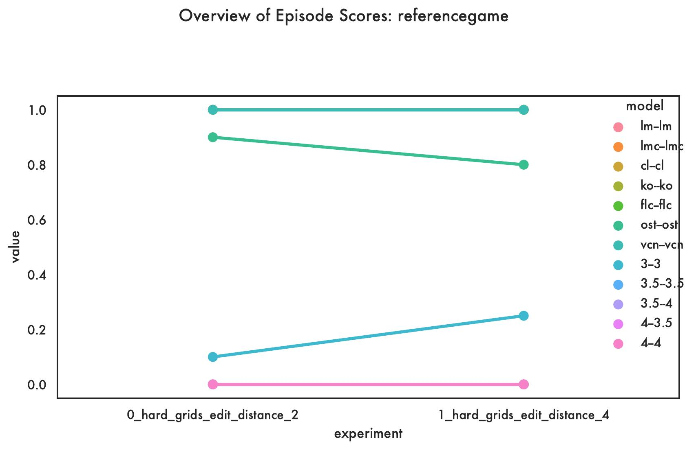
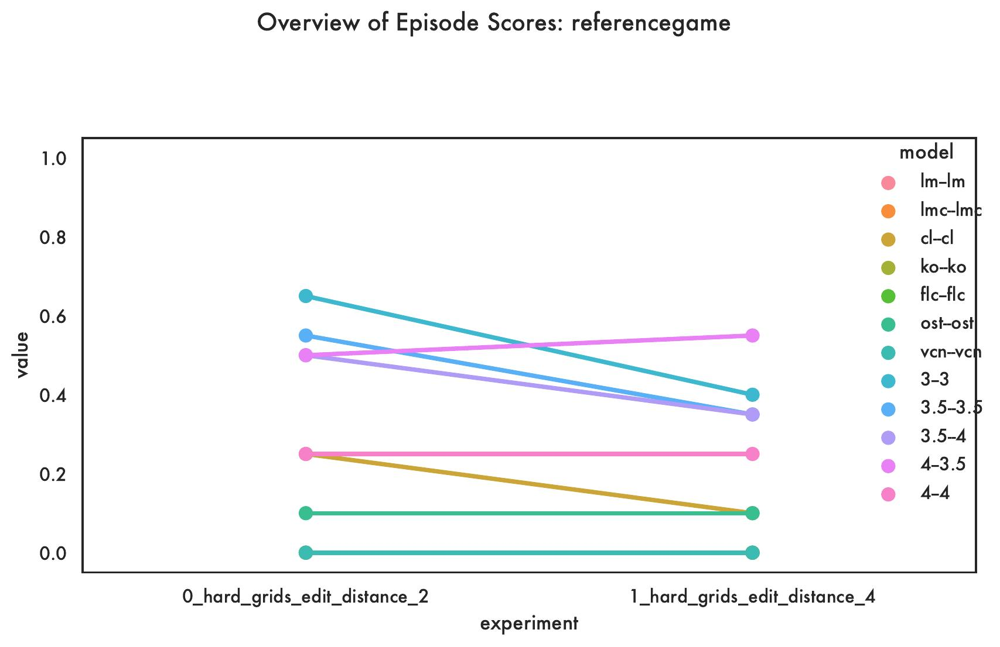
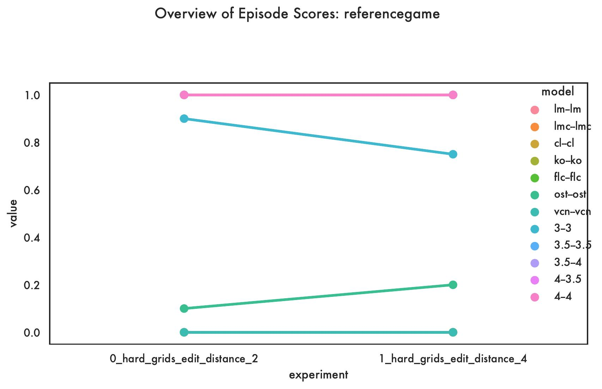
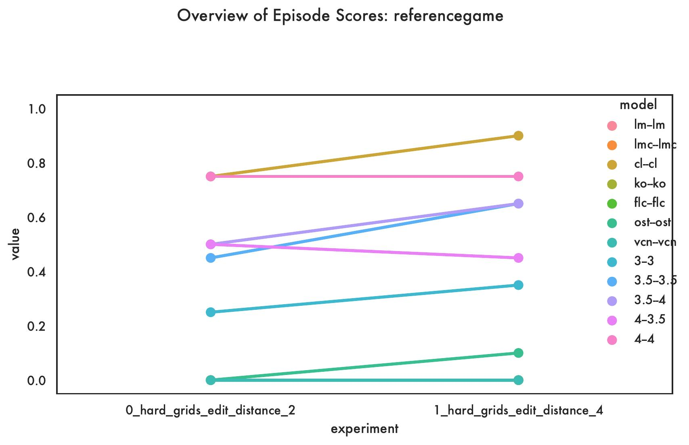

Drawing Instruction Giving and Following: reference
Each instance of this game includes three grids where one is the target and the remaining two are distractor grids, which Player A (Instruction Giver) needs to generate a referring expression that describes only the target grid and Player B (Instruction Follower) takes into account the given referring expression and expected to guess which of the given three grids is the target grid.
The Game Master selects a target and two distractor grids and instructs the Player A to generate a referring expression that uniquely describes the target grid and differentiates it from the distractors. There is a history of work on referring expression generation and the topic has recently received new attention in the context of neural learners. The Game Master then provides the same three grids and the referring expression from Player A to Player B. The three grids are numbered such as first, second, and third and the order of grids are randomly shuffled for Player B. Player B generates a single expression that should refer to the number of the target grid that matches the given expression. The game is played for a single turn.
Leaderboard
| Models | Experiment | Aborted | Lose | Main Score | Played | Success |
|---|---|---|---|---|---|---|
| 3–3 | 0_hard_grids_edit_distance_2 | 10 | 65 | 27.77777777777778 | 90.0 | 25.0 |
| 1_hard_grids_edit_distance_4 | 25 | 40 | 46.66666666666666 | 75.0 | 35.0 | |
| 3.5–3.5 | 0_hard_grids_edit_distance_2 | 0 | 55 | 45.0 | 100.0 | 45.0 |
| 1_hard_grids_edit_distance_4 | 0 | 35 | 65.0 | 100.0 | 65.0 | |
| 3.5–4 | 0_hard_grids_edit_distance_2 | 0 | 50 | 50.0 | 100.0 | 50.0 |
| 1_hard_grids_edit_distance_4 | 0 | 35 | 65.0 | 100.0 | 65.0 | |
| 4–3.5 | 0_hard_grids_edit_distance_2 | 0 | 50 | 50.0 | 100.0 | 50.0 |
| 1_hard_grids_edit_distance_4 | 0 | 55 | 45.0 | 100.0 | 45.0 | |
| 4–4 | 0_hard_grids_edit_distance_2 | 0 | 25 | 75.0 | 100.0 | 75.0 |
| 1_hard_grids_edit_distance_4 | 0 | 25 | 75.0 | 100.0 | 75.0 | |
| cl–cl | 0_hard_grids_edit_distance_2 | 0 | 25 | 75.0 | 100.0 | 75.0 |
| 1_hard_grids_edit_distance_4 | 0 | 10 | 90.0 | 100.0 | 90.0 | |
| flc–flc | 0_hard_grids_edit_distance_2 | 100 | 0 | 0.0 | 0.0 | |
| 1_hard_grids_edit_distance_4 | 100 | 0 | 0.0 | 0.0 | ||
| ko–ko | 0_hard_grids_edit_distance_2 | 100 | 0 | 0.0 | 0.0 | |
| 1_hard_grids_edit_distance_4 | 100 | 0 | 0.0 | 0.0 | ||
| lm–lm | 0_hard_grids_edit_distance_2 | 100 | 0 | 0.0 | 0.0 | |
| 1_hard_grids_edit_distance_4 | 100 | 0 | 0.0 | 0.0 | ||
| ost–ost | 0_hard_grids_edit_distance_2 | 90 | 10 | 0.0 | 10.0 | 0.0 |
| 1_hard_grids_edit_distance_4 | 80 | 10 | 50.0 | 20.0 | 10.0 | |
| vcn–vcn | 0_hard_grids_edit_distance_2 | 100 | 0 | 0.0 | 0.0 | |
| 1_hard_grids_edit_distance_4 | 100 | 0 | 0.0 | 0.0 |
Detailed results for each model on each experiment for the reference game
Plots
METRIC - Aborted

METRIC - Lose

METRIC - Main Score

METRIC - Played

METRIC - Success
